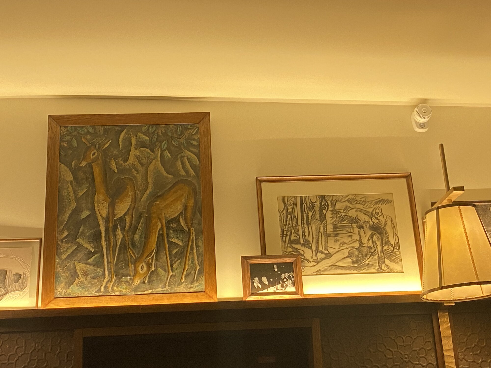
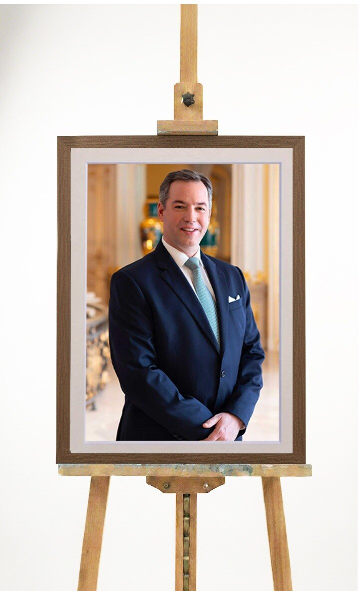
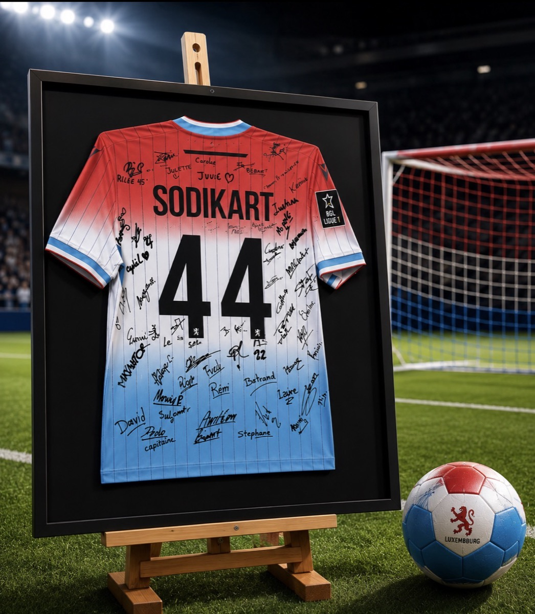
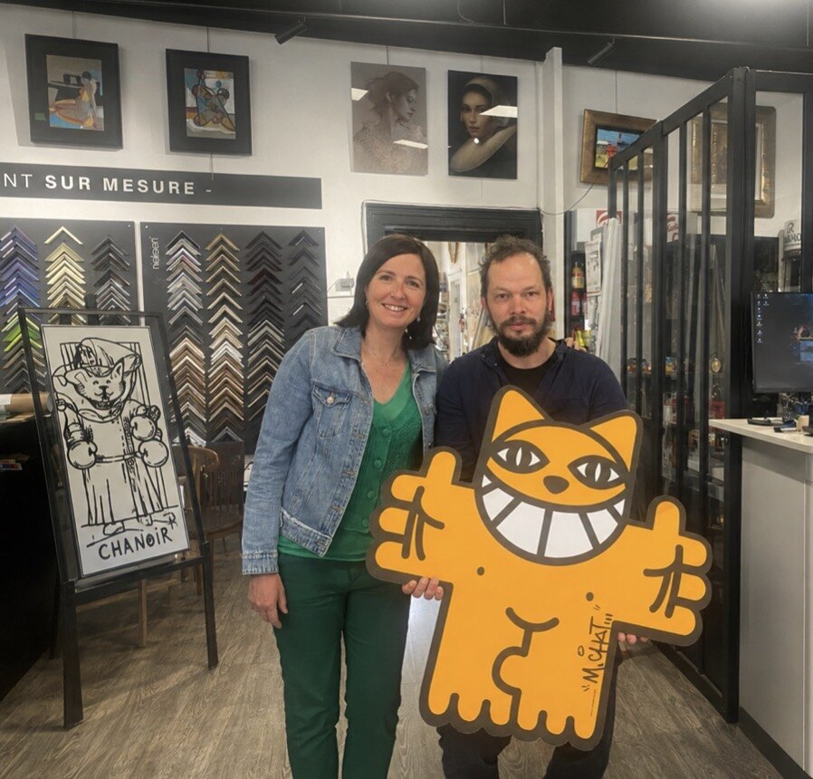

Deloitte Luxembourg
Grand compte · B2B
Panneaux muraux monumentaux et œuvres contemporaines : étude atelier, fabrication sur mesure et pose sur site dans les bureaux du Grand-Duché.
Nous accompagnons les directions communication, les architectes d'intérieur et les responsables de collections corporate. Du petit format au panneau monumental, nous étudions, encadrons et installons sur site.
Maison Neumann depuis 1972 — la même exigence artisanale pour Deloitte, Accor, SES, la Bibliothèque nationale du Luxembourg et la Cour grand-ducale.

Grand compte · B2B
Panneaux muraux monumentaux et œuvres contemporaines : étude atelier, fabrication sur mesure et pose sur site dans les bureaux du Grand-Duché.

Hôtellerie
Encadrements pour plusieurs établissements : art contemporain et photographies dans espaces communs et chambres, avec finitions adaptées au flux hôtelier.

Hôtellerie premium
Le bar de l'hôtel signé Philippe Starck : moulures et finitions artisanales pour un lieu iconique de l'hôtellerie lorraine.

Satellites · Betzdorf
Fournisseur sur site du groupe satellite : cadres et présentations pour les espaces corporate et collections d'entreprise.

Institution culturelle
Grand format en situ : nous maîtrisons l'encadrement et la pose de pièces monumentales pour les institutions patrimoniales.

Institution officielle
Plus de 200 portraits officiels encadrés lors des changements protocolaires — un niveau d'exigence que nous assumons avec discrétion.

Sport · mémorabilia
Maillots signés, pièces de collection et objets sportifs encadrés avec des montages museum adaptés aux pièces de valeur.

Artiste
Collaboration avec l'artiste : encadrements sur mesure pour des œuvres iconiques du street-art international.
Nous intervenons sur rendez-vous à Luxembourg-Ville, Hollerich et dans un rayon de 25 km. Pour un projet institutionnel, contactez-nous directement : devis personnalisé, confidentialité et planning adaptés.